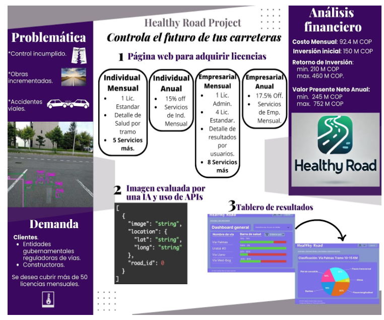

El objetivo de este plan, es lograr acaparar el 45% de la meta deseada de 100 ventas de licencias (mensuales o anuales). Para ello se tiene visualizado ofrecer el producto a las instituciones indicadas en el análisis de demanda del estudio de mercado [6]:
Para mostrar las funcionalidades que logren interesar a delegados, personas, etc; de los individuos anteriores se proponen desde demostraciones en vivo hasta otorgar colaboraciones y pilotos que logren interactuar y conectar con la satisfacción del cliente.
Organizar eventos o reuniones con los clientes anteriores o interesados para que muestren en vivo, el funcionamiento del diagnóstico de carreteras a partir de fotografías en tiempo real, y destacar las funcionalidades clave como el procesamiento asíncrono, el dashboard de resultados y la vista detallada de daños. Además, realizar Webinars [7] donde se invite a representantes de cada entidad esto es para permitirles a los participantes subir imágenes y ver cómo funciona la aplicación.
En la web, para usuarios invitados, se dejará una demo limitada por tiempo, como lo realizan las plataformas de streaming [8], esto permitirá ofrecer las funcionalidades de la licencia mensual, observadas en Tabla 4.del análisis de precio [6], subir imágenes de ejemplo y ver resultados ficticios generados por la aplicación.
Mostrar la aplicación ofreciendolo como parte de tecnología innovadora y demostrando la facilidad del control de obras pavimentadas, en los siguientes posibles eventos:
En la siguiente imagen se busca mostrar de manera general el proyecto, desde cada uno de los servicios iniciales, los costos generales y las ganancias esperadas mensual y anualmente.
